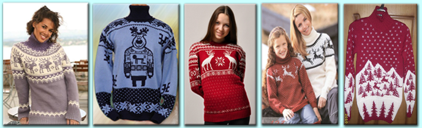
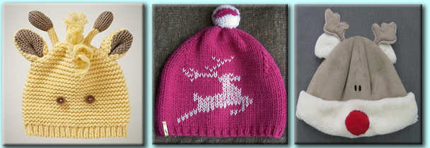
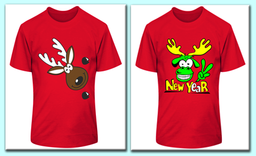
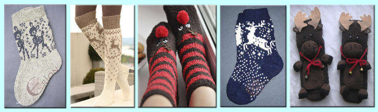

Образ и изображение оленей часто используют в своем творчестве художники, скульпторы, дизайнеры и архитекторы.
В зимнее время года во всем мире очень популярна одежда с оленями. Многие люди ходят в свитерах с олешами, варежках, шарфах. Особенно оригинальные футболках и шапках :) Вязаные свитера теплые, красивые и милые, вызыают зависть тех, у кого еще нет такого свитера.

Шапки. Не каждый день увидишь на улице человека в шапке с оленем :)

Очень милы и креативны футболки с оленями, хотя они встречаются на так часто. Но если захотеть, то можно найти такую в каком-нибудь интернет-магазине.

Олень - символ зимний, поэтому его размещают в основном на теплых шерстяных вязаных вещичках. Бывают теплые и уютные носочки, тапочки, варежечки ^_^



© Кириллова Ольга 2013